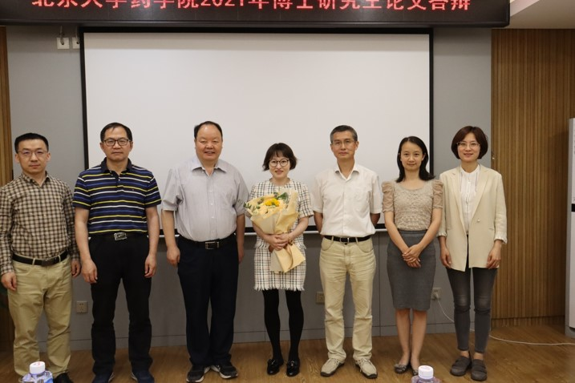
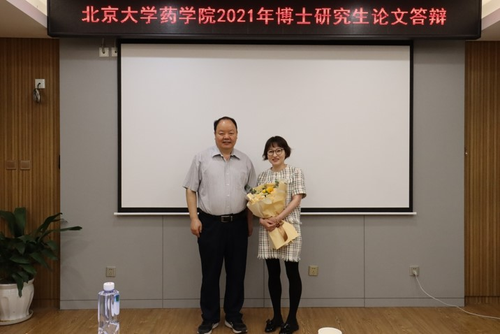
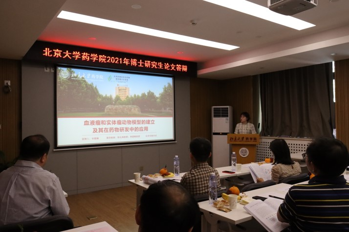
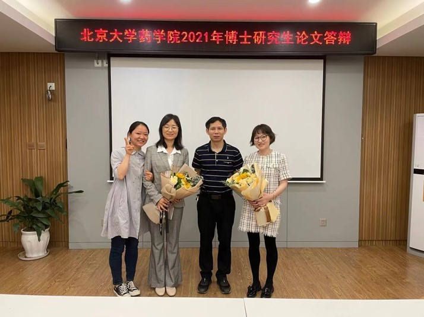
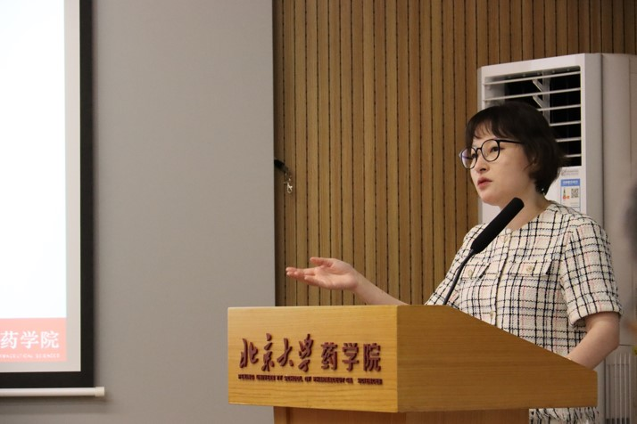

Tel：18600228656（中国）6693009055（美国）
Mail：xye.an@hotmail.com
毕业去向：
Crown Bioscience Inc.
教育经历：
2006.07 - 2008.12 澳大利亚格里菲斯大学，生物医学，学士
2009.02 - 2010.07 澳大利亚昆士兰大学，生物分子学，硕士，导师：Ranjeny Thomas教授
2014.09 - 2019.07 北京大学医学部 药学院 化学生物学系 博士，导师：周德敏 教授/张礼和院士
工作经历
2011. 12 – 2014.08 Crown Bioscience Inc., Scientist I
荣誉奖励
Dean’s Award for Higher achievement from The University of Queensland (2010)
Best Team Award for Rheumatoid Arthritis Clinical Trial Research from The University of Queensland (2011)
研究成果：
1. An X,# Ouyang X,# Zhang H, et al. Immunophenotyping of Orthotopic Homograft (Syngeneic) of Murine Primary KPC Pancreatic Ductal Adenocarcinoma by Flow Cytometry[J]. Journal of Visualized Experiments, 2018, (140), 57460.
2. An X,# Liu J,# Wang N, et al. AC220 and AraC cause differential inhibitory dynamics in patient-derived M5-AML with FLT3-ITD and, thus, ultimately distinct therapeutic outcomes[J]. Experimental Hematology, 2017, 45:36-44 e2.
3. Chen D,# An X,# Ouyang X, et al. Chapter 12 In Vivo Pharmacology Models for Cancer Target Research. Target Identification and Validation in Drug Discovery: Methods and Protocols, Methods in Molecular Biology. 1953. 2019/03/27 ed2019. p. 183-211.
4. Li Q-X, Feuer G, Ouyang X, An X. Experimental animal modeling for immuno-oncology[J]. Pharmacology and Therapeutics, 2017, 173:34-46.
毕业感言
光阴似箭，已经到了毕业说再见的时候了，在这段学习的历程中，带给我的学生生涯无限的激情和收获。我忠心的感谢学识渊博，学风严谨的老师们，走在研究最前沿的研究学者们和可爱、善良的同学们，因为你们让我在北医校园的学生生涯充满了色彩。如流沙河先生《理想》中所说的，请乘理想之马，挥鞭从此启程，希望我们的未来一切越来越好。
座右铭
乐观向上
精彩瞬间




